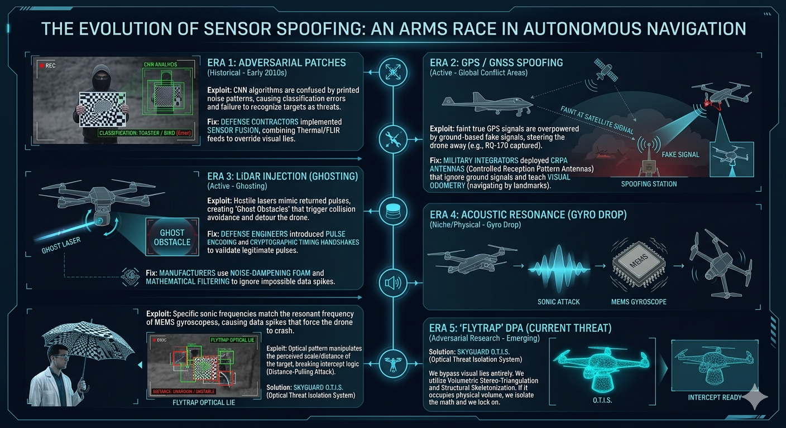

The Evolution of Sensor Spoofing: Why Legacy C-UAS Is Failing
Published by InSitu Labs R&D | SkyGuard Defense Systems | Denver, CO
The arms race between autonomous navigation and adversarial interference operates on a brutal feedback loop. Every time an interception platform relies on a specific sensor to map physical space, adversaries find a way to spoof the data feeding into that sensor.
If your Autonomous Target Tracking (ATT) matrix relies purely on RGB feeds, bounding-box algorithms, or even basic LiDAR, you are operating on a vulnerable medium. At SkyGuard, we recognized that trying to out-process optical lies is a losing game. You don't filter the illusion; you bypass the visual feed entirely and isolate the math.
Here is how the landscape of sensor spoofing has evolved, and how the Optical Threat Isolation System (O.T.I.S.) renders these attacks obsolete.

Generation 1: The Adversarial Patch (CNN Exploits)
Early autonomous tracking systems relied heavily on Convolutional Neural Networks (CNNs). These networks scan environments looking for specific textures and contrast gradients to classify objects.
THE EXPLOIT: Attackers realized that by printing highly specific, chaotic "noise" patterns onto a poster board or wearable clothing, they could break the CNN's classification logic. A human walking directly in front of a drone holding an adversarial patch might be classified as a "bird," a "toaster," or completely ignored as background static. The system sees the target, but the cognitive software fails to acknowledge it as a threat.
THE SKYGUARD OVERRIDE (SDM): To defeat adversarial patches, O.T.I.S. deploys the Spectral Delamination Matrix (SDM). SDM does not care about classification textures or optical camouflage. It aggressively strips away high-contrast spoofing patterns across all color spaces. Before the CNN even attempts to classify the target, the optical "noise" is mathematically erased, exposing the physical shape beneath.
Generation 2: LiDAR Injection (Ghosting)
As optical cameras proved vulnerable, defense platforms pivoted heavily to LiDAR, firing lasers to physically map 3D space. It didn't take long for adversaries to spoof the light itself.
THE EXPLOIT: By firing a laser back into a drone's LiDAR sensor at the exact correct frequency, an attacker can trick the sensor into registering a "ghost obstacle." The drone's collision avoidance system suddenly registers a concrete wall directly in its flight path, forcing it to violently veer off course or abort the intercept.
THE SKYGUARD OVERRIDE (VST): While standard pulse encoding mitigates some LiDAR attacks, O.T.I.S. cross-references positional data using Volumetric Stereo-Triangulation (VST). VST generates an un-spoofable spatial mesh by calculating depth continuously through dual-lens disparity. If a LiDAR sensor reports a wall, but the VST spatial mesh registers empty geometry, the system instantly identifies the LiDAR injection and ignores the ghost obstacle.
Generation 3: The Distance-Pulling Attack (Flytrap)
The bleeding edge of optical interference is the Distance-Pulling Attack (DPA), most recently demonstrated by the "Flytrap" adversarial umbrella. Instead of masking identity, DPA masks physical proximity.
THE EXPLOIT: Drones often use the perceived pixel-size of a recognized object (like a human silhouette) to estimate distance. The Flytrap umbrella displays a mathematically warped projection that forces the drone’s bounding-box to miscalculate scale. The drone thinks the target is 50 meters away when it is actually 5 meters away, causing kinetic strikes to miss entirely.
THE SKYGUARD OVERRIDE (Structural Skeletonization): O.T.I.S. completely neutralizes the Flytrap exploit through Kinetic Contour Mapping (KCM) and Structural Skeletonization. We strip away the 2D projected illusion and reduce the target to its raw geometric wireframe. Because we calculate distance based on true structural depth rather than optical scaling, distance-manipulation tactics become completely useless. We see the true center mass, and we lock the kinetic intercept.